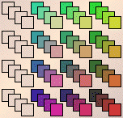

IFS with Memory
Gaskets by Forbidden Triples
To produce a picture of four gaskets using
forbidden pairs
, we forbid
1 → 1,
1 → 2,
1 → 3,
and
1 → 4.
To achieve these with forbidden triples, we forbid all of the form
i → 1 → j.

From the
software description
, we see that to forbid all triples
i → 1 → j,
we set to 0 all entries in the first column.
Return to
Gaskets
.